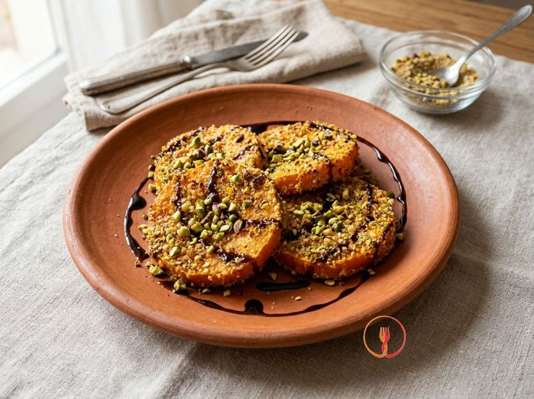
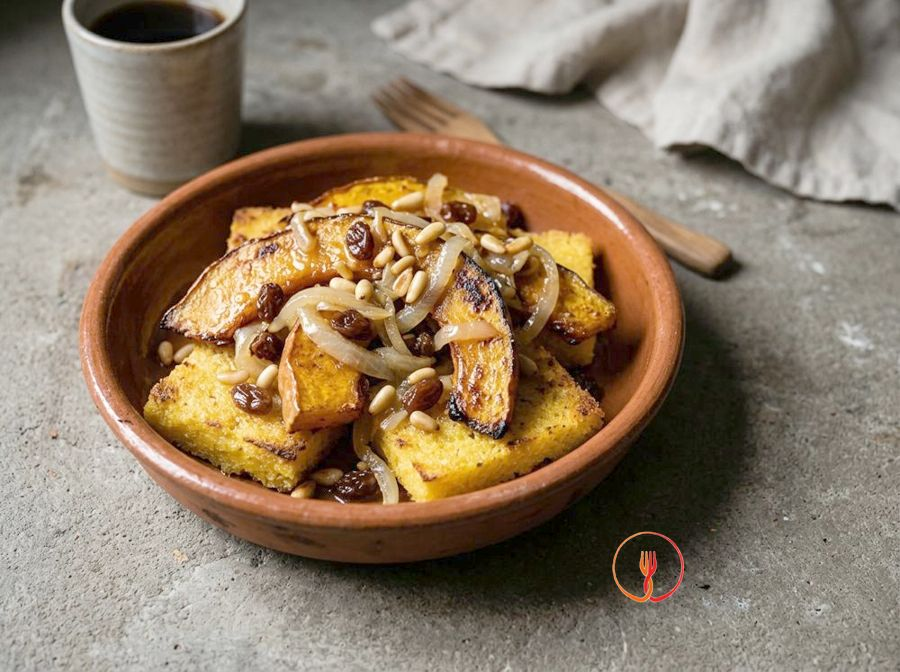
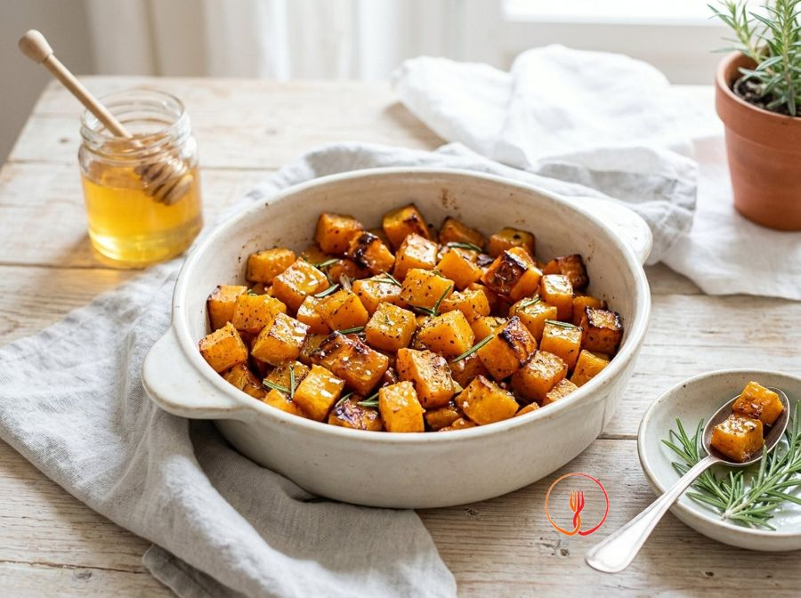

Medaglioni di zucca in crosta di pistacchi con riduzione al balsamico
Fette di zucca soda impanate e dorate in padella, servite con una nota agrodolce elegante.
Ingredienti
- Zucca Delica (tagliata a fette tonde spesse 1,5cm)8 fette
- Granella di pistacchi100g
- Pangrattato50g
- Uova medie2
- Farina 00q.b.
- Aceto balsamico di Modena100ml
- Miele di acacia1 cucchiaino
- Olio di semi di arachideper friggere
- Sale e pepeq.b.
Allergeni
Frutta a guscio, Glutine, Uova
Procedimento
- Inizia preparando la riduzione versando 100ml di aceto balsamico e 1 cucchiaino di miele in un pentolino d'acciaio dal fondo spesso. Cuoci a fiamma molto bassa, mescolando occasionalmente con un cucchiaio di legno, finché il liquido non si riduce della metà del suo volume iniziale. Dovrai ottenere una consistenza sciropposa e densa che 'nappa' il cucchiaio, sprigionando un aroma agrodolce intenso e un colore bruno lucido. Il mio consiglio: non alzare mai la fiamma, altrimenti lo zucchero del miele e dell'aceto brucerà rendendo la salsa irrimediabilmente amara.
- Prendi la zucca Delica e, dopo averla lavata accuratamente, ricava 8 fette circolari spesse esattamente 1,5 cm, mantenendo la buccia che in questa varietà è sottile e deliziosa. Rimuovi i semi e i filamenti interni con l'aiuto di un cucchiaio, cercando di mantenere la forma a medaglione il più integra e regolare possibile. Questa precisione nel taglio garantisce una cottura uniforme del cuore della zucca senza rischiare di bruciare la panatura esterna. Il mio consiglio: usa un coltello da chef ben affilato e fai movimenti decisi e paralleli per evitare che le fette risultino sbilenche.
- Allestisci la tua postazione per la panatura disponendo tre ciotole capienti in fila sul piano di lavoro. Nella prima metti la farina 00, nella seconda sbatti energicamente 2 uova medie con un pizzico generoso di sale e pepe, e nella terza unisci 100g di granella di pistacchi con 50g di pangrattato. Mescola bene il mix di pistacchi e pane affinché la panatura sia omogenea e visivamente accattivante grazie al contrasto di colori tra il verde e il dorato. Il mio consiglio: tieni sempre una mano dedicata agli ingredienti secchi e l'altra per quelli umidi per evitare di creare grumi sulle tue dita.
- Prendi ogni fetta di zucca e passala con cura nella farina 00, assicurandoti di coprire ogni millimetro della superficie, poi scuotila con delicatezza tra le mani per eliminare l'eccesso. Immergi subito il medaglione infarinato nell'uovo sbattuto, girandolo più volte affinché la farina assorba il liquido creando una sorta di 'colla' naturale e uniforme. Questo passaggio è fondamentale per far sì che la granella di pistacchio non si stacchi durante la fase di frittura. Il mio consiglio: assicurati che la zucca sia ben asciutta prima di iniziare l'infarinatura, così la farina non diventerà una poltiglia.
- Trasferisci la zucca nel mix di 100g di granella di pistacchi e 50g di pangrattato, premendo con fermezza con il palmo della mano per far aderire bene la panatura su entrambi i lati e sui bordi. Dovrai ottenere una crosta spessa, ricca e uniforme che nasconda completamente la polpa arancione della zucca sottostante. La granella deve essere distribuita in modo compatto per garantire una croccantezza straordinaria e un sapore tostato in ogni morso. Il mio consiglio: compatta bene i bordi circolari del medaglione facendolo rotolare nel mix come se fosse una piccola ruota.
- Versa abbondante olio di semi di arachide in una padella larga dai bordi alti e scaldalo a fuoco medio fino a raggiungere la temperatura ideale di 170°C. Se non possiedi un termometro da cucina, immergi la punta di uno stuzzicadenti nell'olio: se sfrigola immediatamente creando piccole bollicine vivaci, l'olio è pronto per accogliere la zucca. L'olio di arachide è la scelta migliore per il suo alto punto di fumo che protegge il sapore delicato dei pistacchi. Il mio consiglio: non superare mai i 170-175°C per evitare che i pistacchi diventino scuri e sgradevoli prima che l'interno sia cotto.
- Adagia delicatamente i medaglioni nell'olio caldo, avendo cura di non riempire troppo la padella per evitare che la temperatura dell'olio crolli improvvisamente. Cuoci per circa 4-5 minuti per ogni lato mantenendo la fiamma medio-bassa, permettendo al calore di penetrare dolcemente fino al cuore della zucca. I medaglioni dovranno risultare dorati in superficie, con i pistacchi leggermente tostati e la polpa interna tenera (puoi verificarlo infilzandoli lateralmente con uno stecchino). Il mio consiglio: usa una pinza da cucina per girarli con delicatezza, evitando assolutamente di forare la panatura con una forchetta.
- Una volta completata la cottura, scola i medaglioni con una schiumarola e adagiali su un vassoio rivestito con abbondante carta assorbente per fritti. Tamponali leggermente anche sulla parte superiore per rimuovere ogni traccia di olio in eccesso e regola immediatamente di sale finché sono ancora bollenti, permettendo ai cristalli di aderire alla crosta. La superficie dovrà apparire asciutta, estremamente croccante e profumata di frutta secca tostata. Il mio consiglio: non sovrapporre mai i medaglioni tra loro mentre riposano, altrimenti il calore residuo creerà vapore rendendo la panatura molliccia.
- Componi il piatto di portata disponendo due medaglioni di zucca per ogni commensale, magari sovrapponendoli leggermente per dare volume e altezza alla presentazione. Prendi la tua riduzione di balsamico e miele e decora i medaglioni facendola cadere a filo con un movimento fluido, aggiungendo infine qualche pistacchio intero se disponibile. Il contrasto cromatico tra il verde della crosta, l'arancione della polpa e il bruno lucido della salsa renderà il tuo piatto degno di un ristorante stellato. Il mio consiglio: scalda leggermente i piatti prima di servire per mantenere i medaglioni alla temperatura ideale più a lungo.
Valori nutrizionali (stima)
| Per porzione (250 g) | Per 100 g | |
|---|---|---|
| Energia | 1745 kJ / 417 kcal | 699 kJ / 167 kcal |
| Proteine | 12 g | 5.0 g |
| Carboidrati | 41 g | 16 g |
| di cui zuccheri | 13 g | 5.4 g |
| Grassi | 24 g | 9.7 g |
| di cui saturi | 3.6 g | 1.4 g |
| Fibre | 8.9 g | 3.5 g |
| Sale | 0.6 g | 0.2 g |
Valori stimati con l'AI su dati medi CREA / USDA: sono indicativi e non sostituiscono il parere di un medico o di un nutrizionista.
Apri la ricetta nell'app per la lista della spesa, le schede ingredienti e i negozi vicini.
Ricette correlate

Veneto · 70 minZucca in saor con crostini di polenta croccante🌿 Ricetta di stagione Campania · 70 minPaccheri gratinati farciti con zucca, salsiccia e provola🌿 Ricetta di stagione
Campania · 70 minPaccheri gratinati farciti con zucca, salsiccia e provola🌿 Ricetta di stagione 35 minSpaghetti alla Crema di Zucca e Salvia💰 Salva Euro
35 minSpaghetti alla Crema di Zucca e Salvia💰 Salva Euro
40 minCubi di Zucca al Forno con Rosmarino e Miele💰 Salva Euro